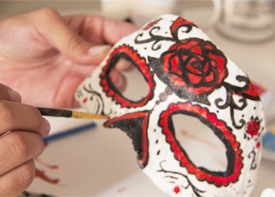

<!--START SLIDE-->

<div>
  <div class="table-cell-left">
    <h2>Decorate!</h2>
    <div style="width:360px;">
Finally you can start decorating your Day of the Dead Mask! There are endless ways you can decorate it, but if you need inspiration look on the internet to get a good start. Have Fun!
</div>
  </div>
  <div class="table-cell-right">  </div>
</div>
<!--END SLIDE 1-->